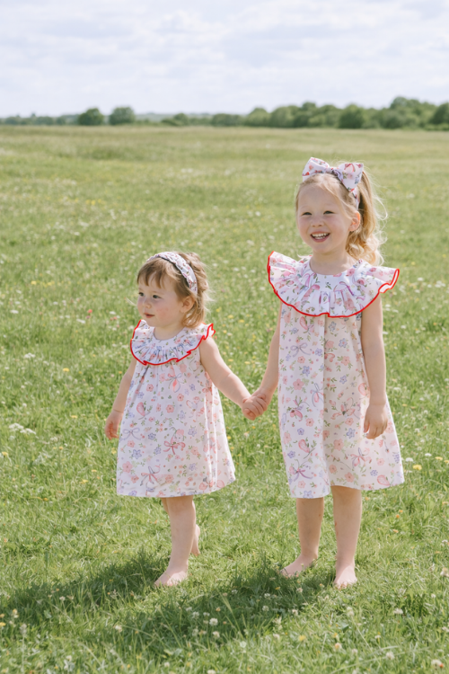
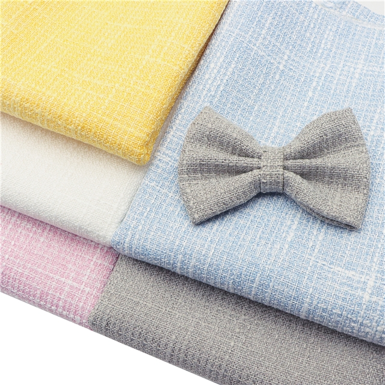
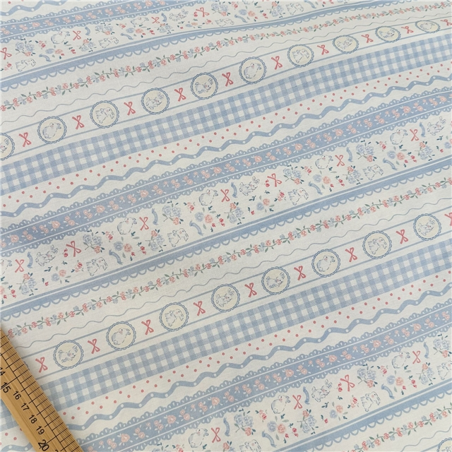
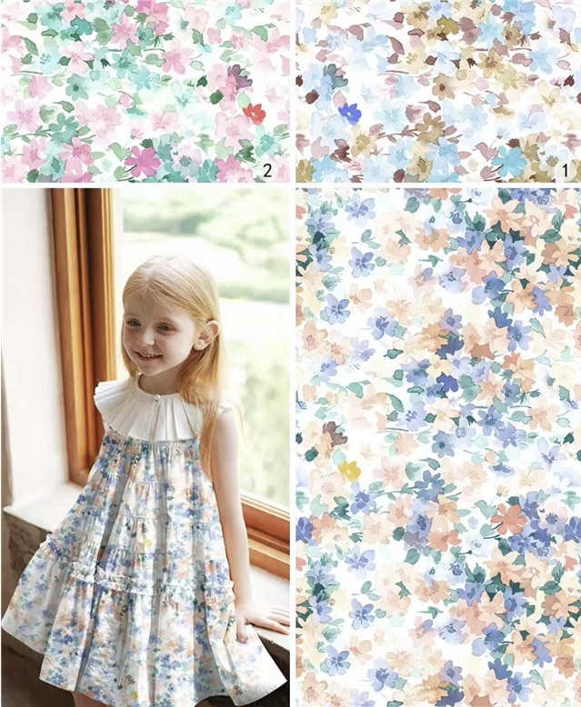
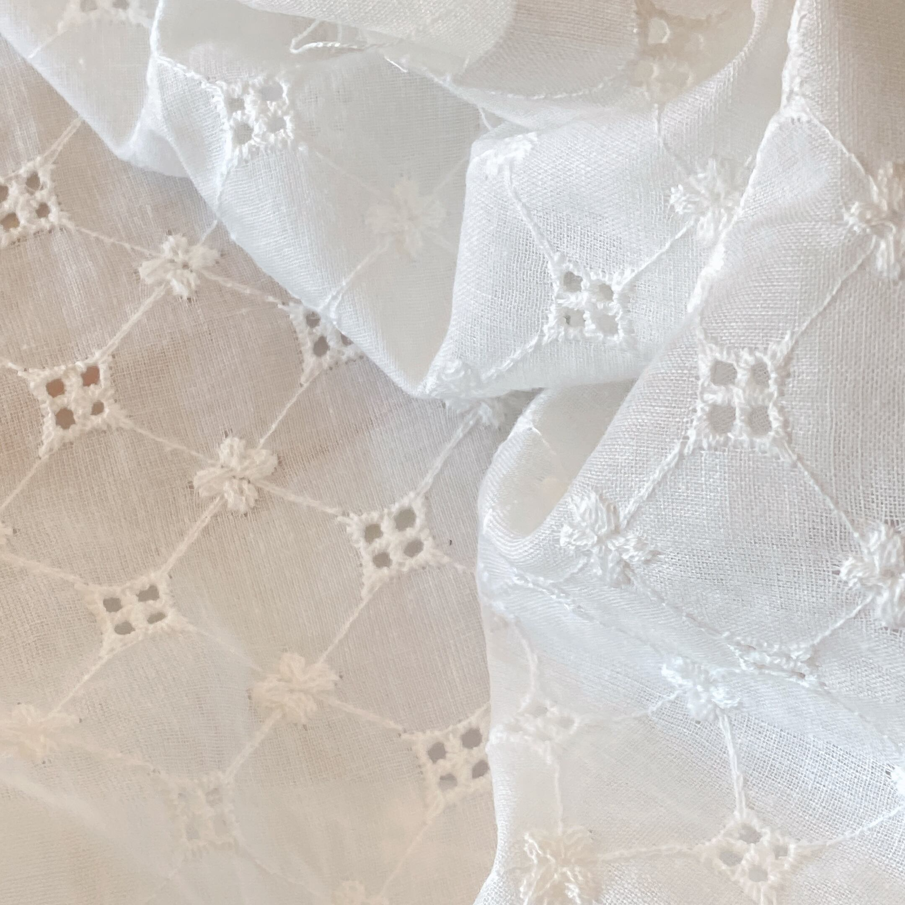
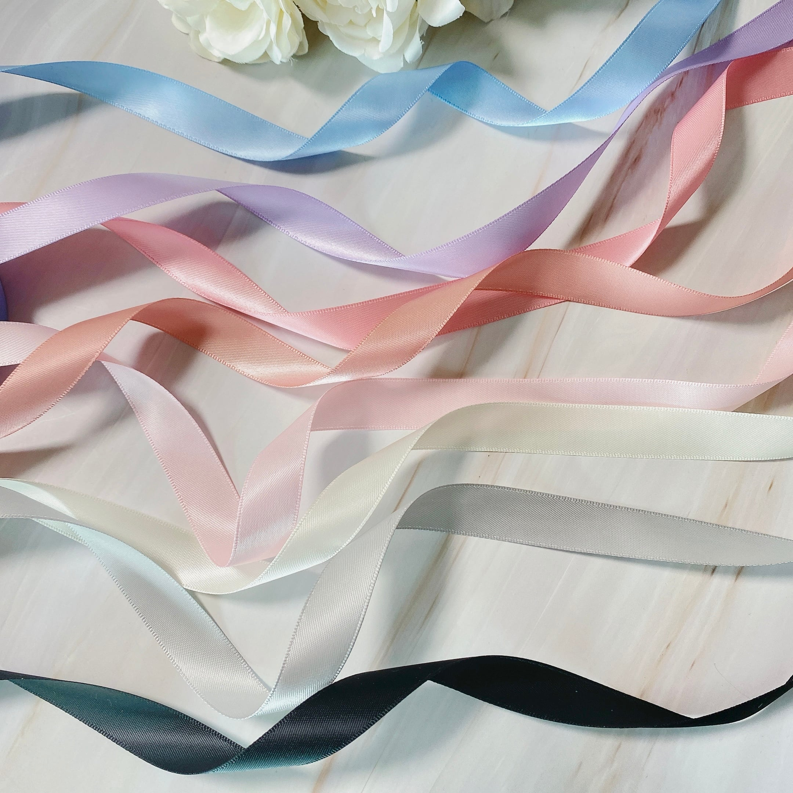
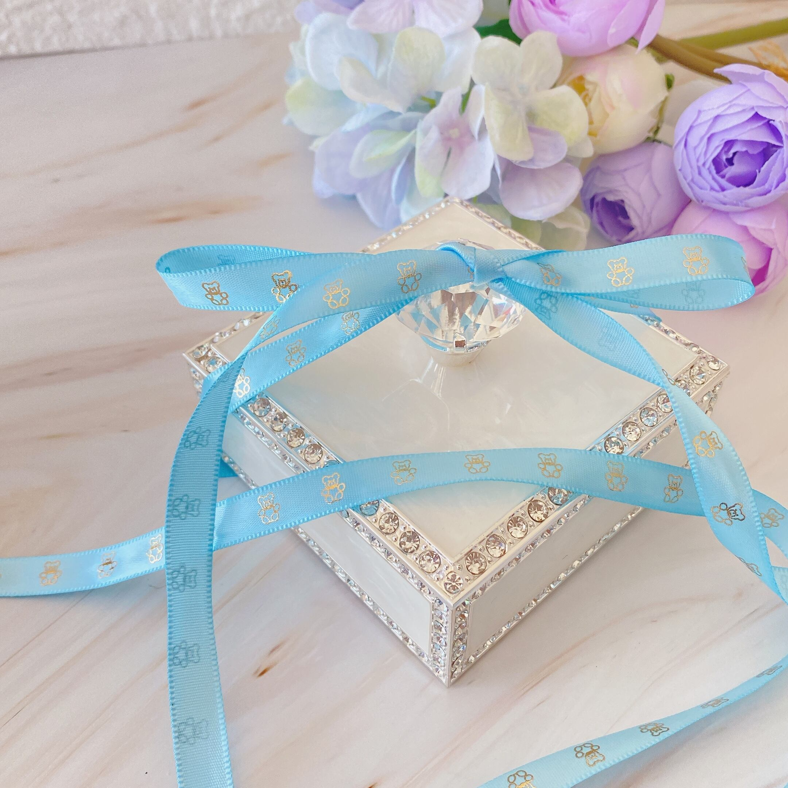
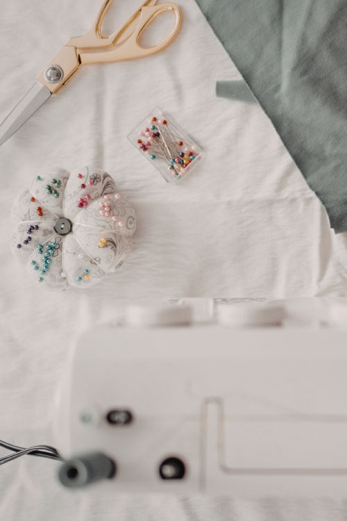

世界の生地を、あなたの手のひらに。
世界中から厳選した輸入生地を、ハンドメイド作家さんが使いやすいサイズでお届けします。
50×50cm・30×30cm・ハギレサイズなど、ちょっとだけ試したい気持ちに寄り添うサイズ展開。
花柄コットンからツイードまで、あなたの作品づくりにぴったりの一枚がきっと見つかります。
FABRIC COLLECTION




Why Petit Atelier
小さなサイズから
50×50cm・30×30cmなど、使いやすいハギレサイズで販売。気になる生地を気軽に試せます。
こだわりの輸入生地
世界中から厳選した輸入生地をセレクト。ハンドメイド作家さんの作品づくりに寄り添う素材を揃えています。
丁寧な梱包
大切な生地を一点一点ていねいに梱包してお届けします。
Original Ribbon


あなたのこだわりを、リボンに。
ショップロゴやブランド名をサテンリボンにプリントする受注販売を承っています。
ハンドメイド作品をより特別に、あなたのこだわりをお客様に伝えるお手伝いをします。
サテンリボン
10mm・16mm・25mm 幅
100ヤードから受注承ります。
Petit Atelier について

好きな生地を、好きなだけ。
ハンドメイド作家さんの「ちょっとだけ試したい」という気持ちに寄り添うファブリックショップです。
世界中から厳選した輸入生地を、使いやすいハギレサイズで。
小さくはじまる、大切な一枚をお届けします。